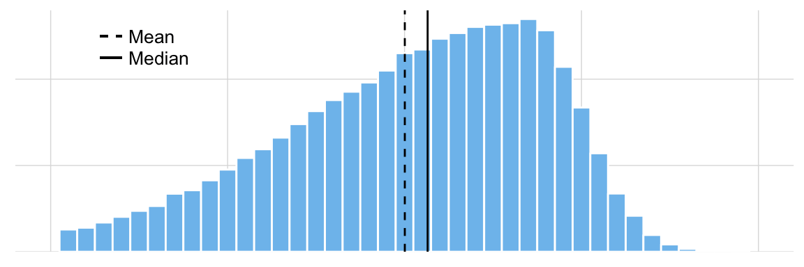

Mean, Median, and Mode
1 What are measures of centrality?

You’ve just collected a lot of height data and graphed it. Although informative, a graphical display of these data is difficult to summarize– we need to describe these heights with a single number that will be meaningful and allow us to do statistics.
We can do this with a measure of centrality: the mean, the median, or the mode. A measure of centrality describes the concept that one number in the “center” of the data set is a good summary of the entire set. What’s the best measure of the center?
The mean is the average and the measure of centrality that you are probably most familiar with. We describe it in detail below.
- The median is the number in the middle of the data set. Half of the observations lie above the median and half below. The median is used as the measure of centrality when your data are not normally distributed and are instead skewed to the left of right.

The mode is the number (or height in our case) that occurs most frequently in the data set. It’s not typically used in statistics, and we won’t cover it further here.
1.0.1 Taking the mean
The mean is the sum of all of the heights divided by the number of giraffes for the sample. All giraffes will be labeled “x”, and the numerical subscript indicates the giraffes’s number in the sample.
We’ll use \({\bar{x}}\) (read “x-bar”) to represent the mean of each sample, calculated with the following equation:
To make this more efficient, instead of writing “\({x_1 + x_2 + ... + x_n}\)”, we can use the uppercase sigma symbol \(\sum{}\) to represent summation of all the observations.
This might look intimidating, but equation (1.2) is really showing the same thing as (1.1). Let’s break the symbols apart a bit (see annotated equation (1.3) below). The sigma means ‘add up’. What are we adding up? All the heights “x”, which we call our observations. The “i = ” part indicates which term to begin adding. For our purposes, this will always be the first observation, when i = 1. The character on top of the sigma is the last observation we include in our summation. In this case it’s n –because we’re adding all n = 50 observations in each group of giraffes. In both equations, we still divide by the total number of observations in each group we have: n.
1.0.2 Code it up
Using (1.2), it’s easy to translate this into code in R. The heights recorded from island 1 have been stored in a vector calledheights_island1. Below we show the first few observations from this vector, using the head() function.
head(heights_island1)## [1] 7.038865 13.154339 8.086511 8.159990 6.004716 9.455408Use the interactive window below to calculate the mean “by hand”.
1.0.3 Create your own function
Now it’s your turn to write your own function. Call it “my_mean” and have it calculate the mean of any given vector. You’re going to use the rules for writing a function in R that you’ve used previously. As a reminder, you’ll usefunction() and embed your code (that you completed in the previous exercise) within curly brackets{}. The advantage of making a “homemade” function is that you can string together all the steps from the previous exercise into a single command.
You can also complete the exercise above in RStudio on your local computer. This way you will be able to save your my_mean() function and script for future use.
1.0.4 Taking the median
To calculate the median go through the following steps:
- Assess whether there is an odd or even number of observations
- Order all observations from smallest to largest
- If an odd number, then the median is the middle value at position: (n + 1) / 2
- If an even number, then:
- Find the value at the position: n / 2
- Find the value at the position: (n / 2) + 1
- The median will be the mean of the values of at these two positions.
Before you write your own median function, the two concepts need to be introduced: 1) the modulus operator %% and 2) if...else statements.
11 %% 5 returns the 1, which is the remainer of 11 divided by 5. If the modulus operation returns 0, then there is no remainder. It is useful to apply the modulus operation x %% 2 to determine whether a number x is even or odd by testing whether or not the result is exactly equal to 0. See example code below.
> 10 %% 2## [1] 0> 10 %% 2 == 0## [1] TRUE> 11 %% 2## [1] 1> 11 %% 2 == 0## [1] FALSEif...else statements are useful when you want to specify distinct outcomes for objects dependent on whether they meet your set criteria. See below.
Now that you have a sense for how the %% operator can be used to test whether a number is EVEN or ODD, and how if...else statements work, use both of these concepts in the window below to write your own function that calculates the median of any vector.
1.0.5 Things to think about…
Remember that the sample mean is the estimate the entire population’s mean (which would be impossibly large to measure). How reliably does the mean of a sample represent the population mean? {RED} Warning: if a small sample has been used, the sample mean may not be a reliable at all! Estimates from small samples are subject to the whims of randomness: the larger the sample, the closer the sample size appraches the population size, and the more reliable the sample estimate becomes.
Pressing ‘Play’ on the plot below will illustrate this concept.
- This animation shows the values of means calculated from increasingly larger samples.
- Each point in this line is the mean calculated from a random sample. The TRUE mean of the population is 0.
- The x-axis shows the sample size: small samples on the left, and larger samples to the right.
- The y-axis shows what the mean is for a sample of that particular size. Though the y-values vary here, remember that if the sample were a GOOD estimate of the population, the y-values should be very close to 0.
- But you can see that when the samples are small the sample mean isn’t always a good representation of the population that it was sampled from–and that’s not a good thing.
For further reading see the Law of Large Numbers.
Created using